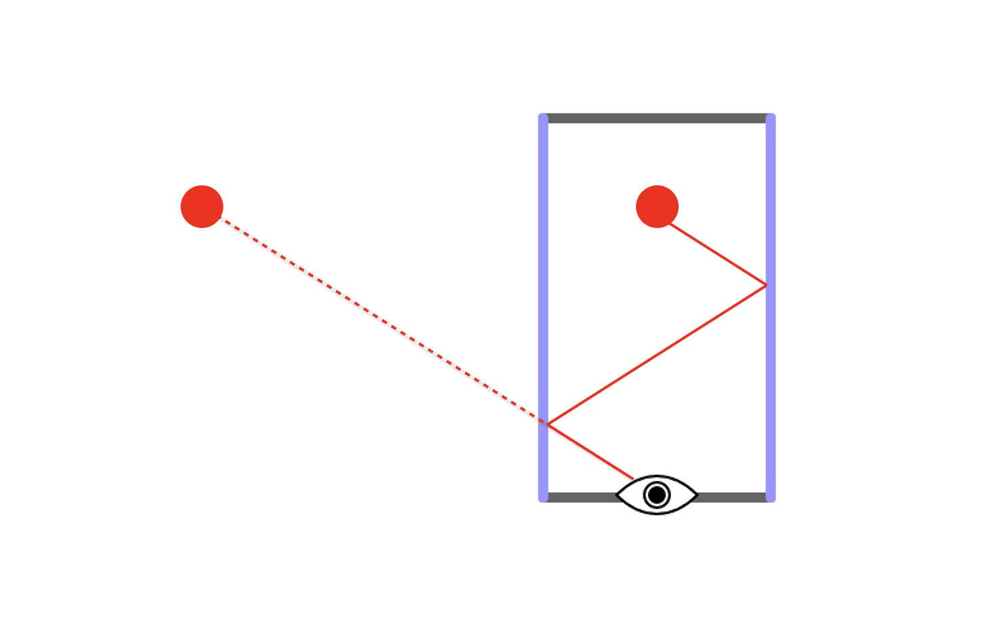

So far, this is pretty straightforward, but things start to get more interesting when light is reflected more than once. If you've ever put two mirrors in the same room, you know that when the angle is just right, you can peer into an infinite abyss.
The diagram below illustrates one instance of such a reflection, where the reflected image of the red ball appears to be far away.
This is due to the length of ray as it bounces back and forth between the mirrored surfaces.
In fact, there are infinite paths the ray could bounce from the ball to your eyes through reflection. Let's try to find 5 other reflected images.
Each segment of the reflected ray contribute to your final perceived distance to the reflected image in the mirror.